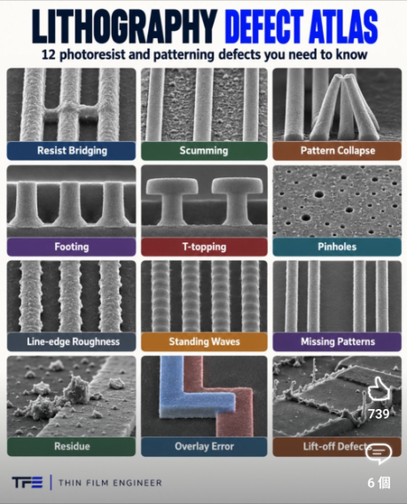
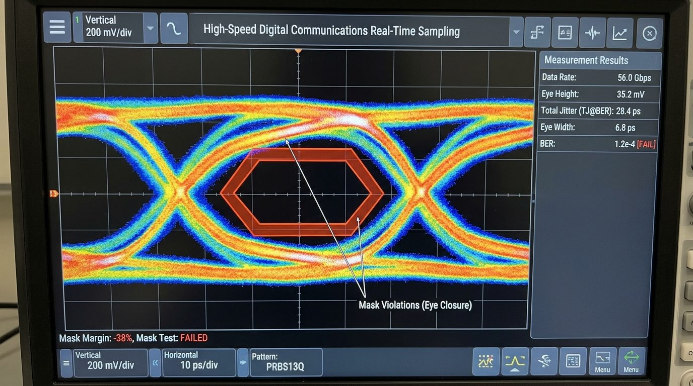

← 返回良率手冊 §4.6 / Back to the playbook §4.6
原始圖片封存 / Archived Original Images
這些是本手冊在 Rev. AT／AU 之前使用的原始圖片，已在頁面中被替換，僅供參考。
These are the images the playbook used before Rev. AT / AU. They have been replaced on the page and are kept for reference only.
⚠️ 第三方著作 / Third-party work
微影缺陷圖片（下方第 1 部分）裁切自 LinkedIn 上流傳的「Lithography Defect Atlas」圖卡（圖卡署名 Thin Film Engineer），著作權屬原作者，原作者尚未確認。相關貼文：
Nuño Amador-Mendez、
Wayne Peng、
Aiman Sanusi。請勿轉載；如需使用請向原作者取得授權。
The lithography images (Part 1) are crops of the "Lithography Defect Atlas" card circulated on LinkedIn (branded Thin Film Engineer). Copyright belongs to its creator, who is not confirmed. Please do not reuse them; ask the creator for permission.
1. 微影缺陷圖卡原圖 / Lithography defect atlas (original)

完整圖卡 / Full atlas cardThin Film Engineer · LinkedIn
以下為頁面先前使用的裁切圖（145×107 px），現已改為向量示意圖或實拍照片。 Crops the page used before (145×107 px); now replaced by vector schematics or real photos.
2. 其他被替換的圖片 / Other replaced images

Top-10 #10 SerDes 眼圖（舊示意圖） / SerDes eye (previous illustration)
來源不明 · Source unknown
→ 已改為實測眼圖 / replaced by a measured eye diagram (A. D. Zonenberg, CC BY 4.0)